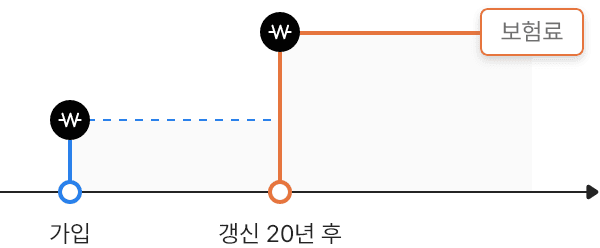

(무)교보괜찮아요암보험(갱신형)다이렉트
키보드 Crtl버튼과 마우스휠 "상하"로 움직이면
"확대" "축소"가 가능합니다.
종합 보장형 암보험
(무)교보괜찮아요암보험(갱신형) 장점
내 상황에 맞게 선택하고 가입하세요!
가입 시 보험료가 상대적으로 적은 갱신형

- 갱신형의 경우 갱신 시 보험료가 변동 또는 인상될 수 있습니다.
암 치료 전 과정 종합보장!
암 위험질환부터 치료 후 합병증까지암 치료 전 과정을 보장받을 수 있어요.
암 보장 필수 시대!
특약으로 전조질환부터 합병증까지 든든하게!
특약으로 전조질환부터 합병증까지 든든하게!
-
- 검사비 지급! (특약)
(연간 1회) -
- 3대질환 MRI 검사
- 갑상선 바늘생검
- 검사비 지급! (특약)
-
- 암 전조질환 보장! (특약)
(연간 1회) -
- 12대기관 용종제거 수술
- 암 전조질환 보장! (특약)
-
- 최신 치료법 든든 보장!
(최초 1회 치료에 한함) -
- 표적항암약물허가치료
- 항암양성자방사선치료
- 항암세기조절방사선치료
- 최신 치료법 든든 보장!
-
- 무사고보장형으로
노후 여유자금 준비! - 암, 3대 질병으로 진단받지 않아도
만기 시 가입금액의 20% 지급!
(최초계약의 만기시점에 한함)
- 무사고보장형으로
- 주계약 갱신형(최초계약의 경우), 비갱신형의 암진단 보험금은 ‘1년 미만(계약일부터 1년이 되는 시점의 계약해당일 전일까지)’ 진단확정 시 암진단보험금의 50%를 감액하여 지급합니다.
- ‘암’은 한국표준질병·사인분류 중 ‘대상이 되는 악성 신생물(암) 분류표(기타피부암, 대장점막내암, 특정갑상선암, 유방암 중 초기유방암(여성에 한함) 및 전립선암 제외)’에서 정한 질병입니다.
- 암보장개시일은 최초 계약의 경우 계약일부터 그날을 포함하여 90일이 되는 날의 다음 날로 하며, 갱신계약의 경우 갱신일로 합니다. 다만, 부활(효력회복)일의 경우에는 부활(효력회복)일부터 부활(효력회복)일을 포함하여 90일이 되는 날의 다음 날입니다.
- 표적항암약물허가치료특약(갱신형) 및 항암양성자방사선치료특약(갱신형)은 각각 최초 1회에 한하여 보장하며 가입 후 1년 미만 발생시 50%감액하여 지급합니다. 급여암특정재활치료특약(갱신형)은 입원 또는 통원 각각 1일 1회에 한하며, 합산하여 연간 10회 한도로 합니다.
- 갱신형 상품은 최대 100세까지 갱신되며, 갱신시에는 연령의 증가, 보험요율에 따라 보험료가 인상될 수 있습니다.
왜 ‘교보괜찮아요암보험’이 필요할까요?
‘교보헬스케어서비스(암특화형)’
‘교보헬스케어서비스(암특화형)’
암치료와 건강 회복에 집중하시도록 세심한 돌봄 서비스를 제공해 드려요.
암, 급성심근경색증, 뇌졸중 진단을 받으면 간호사동반형, 간병인지원형, 생활지원형 중 1가지를 선택하실 수 있어요.
(월 보험료 3만원 이상 가입시 제공)
(월 보험료 3만원 이상 가입시 제공)
-
- 간호사동반형(최대 5회)
-
대학병원은 처음인데 나 혼자 검사와 진료를 받고, 치료과정을 이해할 수 있을까?간호사 병원동반서비스
-
- 간병인지원형(1회, 5일限)
-
수술 후 입원할 경우 나를 간병해 줄 사람이 없는데 어떻게 하지?간병인 지원서비스
-
- 생활지원형(최대 5회)
-
장기간 치료받는 동안 불안하고 우울한 심정을 어떻게 극복하지?암극복 심리상담서비스
-
다행히 수술은 잘 마무리가 됐는데 앞으로 식단은 어떻게 짜야 할까?암식단 케어서비스
-
몸도 아픈데 집안일까지 하려니 힘들어. 날 도와줄 사람 누구 없을까?가사도우미 서비스
준법감시인확인필 1-2204-26 디지털채널통합TF(2022.04.13)
예금자보호 안내
- 내용